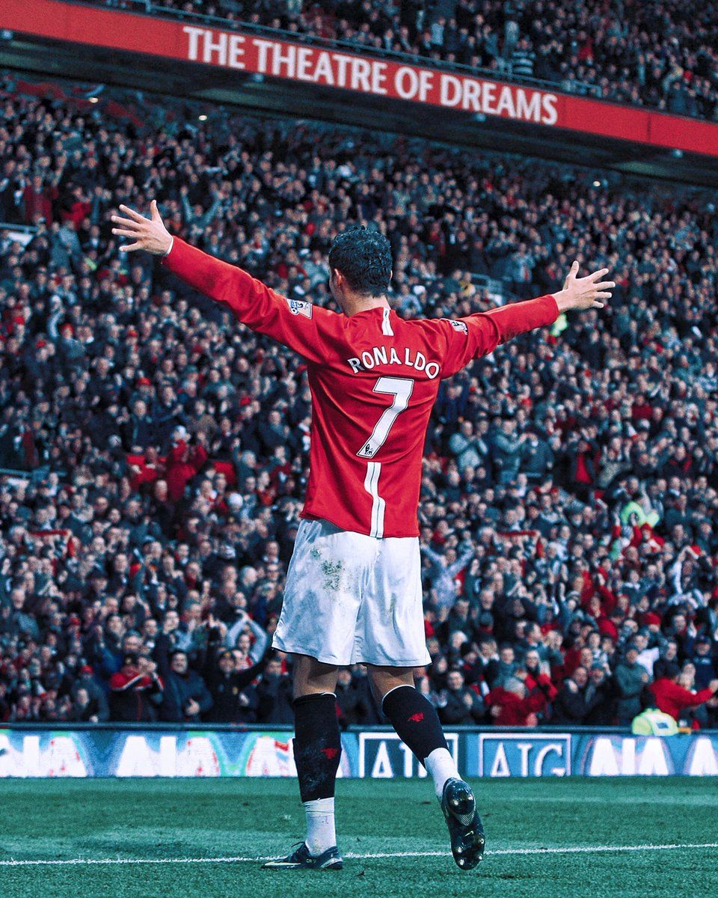
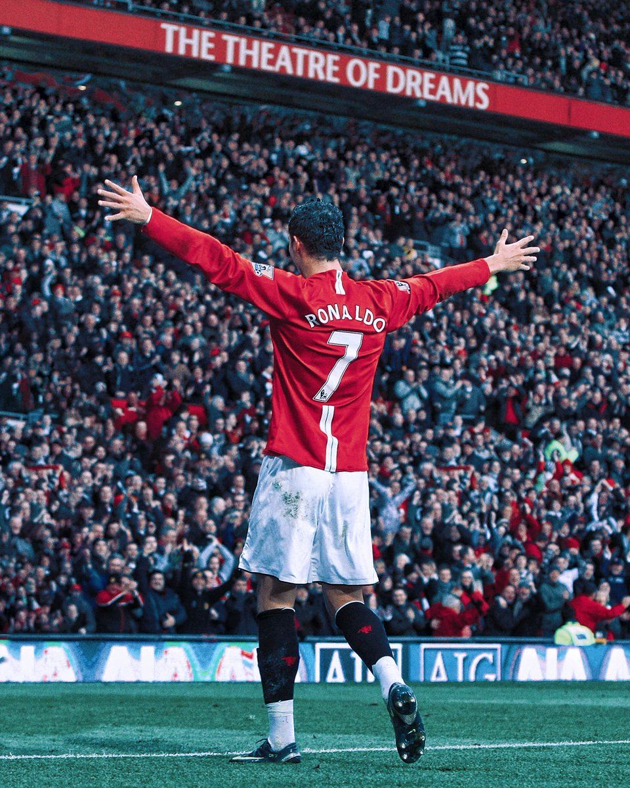

Cristiano Ronaldo dos Santos Aveiro was born on February 5, 1985, in Funchal, Madeira, Portugal. He grew up in a working-class family and showed early talent in football. Ronaldo began his youth career at Andorinha and later moved to Nacional before joining Sporting CP. His exceptional skills quickly caught the attention of scouts from across Europe.
Beyond football, Ronaldo is known for his philanthropic efforts, including donations to hospitals, cancer research, and children's charities. He is also a successful entrepreneur, with ventures in fashion, fragrance, and hospitality industries.
Career
Sporting CP (2002-2003):
Ronaldo's professional career began with Sporting CP in Portugal.
He played for their first team in 2002, showcasing his talent on a larger stage.
Manchester United (2003-2009):
Signed with Manchester United in 2003 for £12.24 million, becoming the most expensive teenager in English football at the time.
Developed into one of the best players in the world under Sir Alex Ferguson.
Won 3 Premier League titles, 1 UEFA Champions League title, and his first Ballon d'Or in 2008.
Real Madrid (2009-2018):
Transferred to Real Madrid in 2009 for a then-world record transfer fee of €94 million.
Became the club's all-time leading scorer with 450 goals.
Won 4 Ballon d'Or awards, 4 Champions League titles, and numerous other accolades.
Juventus (2018-2021):
Moved to Juventus for €100 million in 2018.
Continued to break records, winning 2 Serie A championships and other honors.
Return to Manchester United (2021-2022):
Returned to Manchester United in 2021, where he continued to showcase his extraordinary goal-scoring ability.
Al-Nassr (2023-Present):
In 2023, Ronaldo joined Al-Nassr in Saudi Arabia, continuing his illustrious career.
Achievements
Ballon d'Or Wins:
Won 5 Ballon d'Or awards (2008, 2013, 2014, 2016, 2017).
European Golden Shoes:
Won 4 European Golden Shoes.
League Titles:
Won 7 league titles (3 Premier League, 2 La Liga, 2 Serie A).
UEFA Champions League:
Won 5 UEFA Champions League titles.
Most goals in UEFA Champions League history.
Club Records:
All-time leading scorer for Real Madrid.
International Achievements:
UEFA European Championship winner with Portugal (2016).
 
